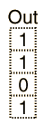

Truth Tables
A truth table shows how a logic circuit's output responds to various combinations of the inputs, using logic 1 for true and logic 0 for false. All permutations of the inputs are listed on the left, and the output of the circuit is listed on the right. The desired output can be achieved by a combination of logic gates. A truth table for two inputs is shown, but it can be extended to any number of inputs. The input columns are usually constructed in the order of binary counting with a number of bits equal to the number of inputs.
|  |  |
| Digital Logic Theorems | Digital Logic Functions |
Electronics concepts
Digital Circuits
| HyperPhysics*****Electricity and magnetism | R Nave |